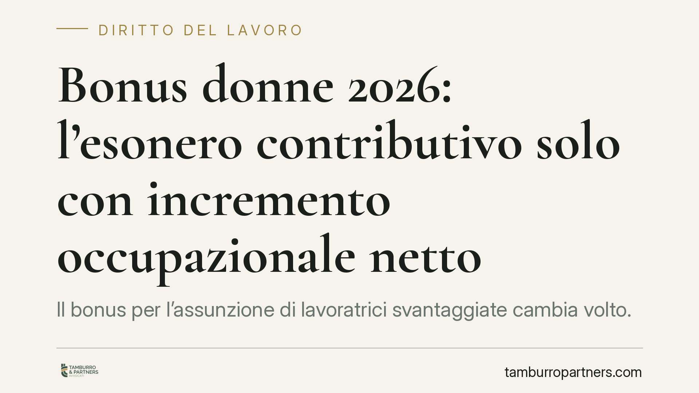

Bonus donne 2026: l'esonero contributivo solo con incremento occupazionale netto
Il bonus per l'assunzione di lavoratrici svantaggiate cambia volto. L'esonero contributivo non è più automatico: l'INPS lo riconosce solo se l'azienda dimostra un incremento netto dell'occupazione e non ha effettuato licenziamenti che svuoterebbero la finalità dell'agevolazione. Per le imprese significa pianificare le assunzioni con maggiore attenzione contabile e documentale, pena la revoca del beneficio.

Il fatto
Dal 15 giugno 2026 l'accesso al bonus per l'occupazione femminile segue regole più stringenti. Il messaggio è chiaro: l'incentivo premia chi crea posti di lavoro, non chi sostituisce personale già in organico.
La novità ruota attorno a due condizioni cumulative. La prima è l'incremento occupazionale netto: l'assunzione agevolata deve tradursi in un aumento effettivo del numero complessivo di dipendenti. La seconda è l'assenza di licenziamenti recenti che potrebbero mascherare un semplice turnover finanziato con denaro pubblico.
Inquadramento normativo
La disciplina è fissata dall'art. 1 del d.l. 62/2026, che rimette il beneficio al rispetto dei parametri europei sugli aiuti di Stato compatibili. Il riferimento centrale è l'art. 2 del Regolamento UE 651/2014 (il cosiddetto regolamento di esenzione per categoria), che definisce sia la nozione di "lavoratore svantaggiato" sia quella di incremento netto dei posti di lavoro.
L'incremento netto, secondo la norma europea, va calcolato confrontando il numero medio di dipendenti nei dodici mesi successivi all'assunzione con la media dei dodici mesi precedenti. In termini concreti: non basta assumere una lavoratrice, occorre che il saldo complessivo dell'organico cresca. Se un posto si è liberato per dimissioni, pensionamento o riduzione volontaria dell'orario, l'incremento si considera comunque realizzato; se invece il posto si è liberato per licenziamento, il beneficio salta.
L'INPS, in qualità di ente erogatore, verifica questi presupposti in fase di domanda e mantiene il potere di revoca in caso di controlli successivi che ne accertino l'insussistenza.
Implicazioni pratiche
Per l'imprenditore il cambiamento è sostanziale. Fino a ieri l'attenzione si concentrava sui requisiti soggettivi della lavoratrice (donna in area svantaggiata, disoccupata da un certo periodo, settore con disparità di genere). Ora il fuoco si sposta sul dato aziendale aggregato.
Un'impresa che assume una lavoratrice ma nello stesso periodo ha licenziato un dipendente con mansioni analoghe rischia di vedersi negato l'esonero, anche se l'assunzione è formalmente corretta. Lo stesso vale per le operazioni di trasformazione societaria o per i gruppi di imprese, dove il calcolo dell'organico va effettuato in modo coerente per evitare aggiramenti.
Il rischio principale è di carattere economico: una revoca successiva comporta la restituzione delle somme con sanzioni e interessi. Un beneficio percepito come acquisito può trasformarsi in un debito imprevisto a distanza di mesi.
Merita attenzione anche il tema dei licenziamenti pregressi. La norma vuole impedire che l'agevolazione finanzi sostituzioni: assumere a costo ridotto chi prende il posto di un lavoratore allontanato snatura la finalità dell'incentivo, che è espandere l'occupazione femminile, non riorganizzarla a spese dell'erario.
Cosa fare in concreto
- Verificate il saldo occupazionale prima di presentare la domanda: confrontate la media dei dipendenti degli ultimi dodici mesi con quella prevista dopo l'assunzione e documentate il calcolo.
- Controllate i licenziamenti recenti nello stesso ambito mansionale: se ve ne sono stati, valutate con il consulente del lavoro se compromettono il requisito dell'incremento netto.
- Conservate la documentazione sui requisiti soggettivi della lavoratrice e sull'andamento dell'organico, in vista di eventuali controlli INPS.
- Pianificate il monitoraggio nei dodici mesi successivi: l'incremento va mantenuto nel tempo, non solo alla data di assunzione.
- Inquadrate l'operazione nel contesto di gruppo, se l'impresa fa parte di una struttura più ampia, per evitare contestazioni sul perimetro di calcolo.
Consigliamo di non considerare l'esonero come un dato acquisito al momento della domanda. La gestione documentale e la coerenza dell'organico nel tempo sono gli elementi che, in caso di verifica, fanno la differenza tra un beneficio consolidato e una richiesta di restituzione.
---
Contributo informativo a cura di Tamburro & Partners - Avv. Giuseppe Tamburro. Non costituisce parere legale.
Ogni storia di lavoro ha i suoi tempi.
Se gestisci HR e vuoi un confronto su contenzioso, ispezioni o licenziamenti, scrivi allo studio. Ti rispondiamo entro un giorno lavorativo.